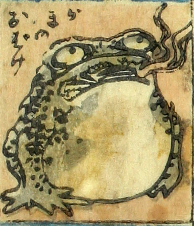

蝦蟇；ガマ，蛙；カエル

蝦蟇のお化け。目玉は大きく、腹は膨らんでいる。開いた口から炎のようなものが吹き出ている。
著作者：芳盛／出典：親書誌：U426_nichibunken_0073：しん板化物尽し；シンパンバケモノヅクシ／日付：2006／資源識別子：U426_nichibunken_0073_0044_0000
Copyright (c)2010- International Research Center for Japanese Studies, Kyoto, Japan. All rights reserved.